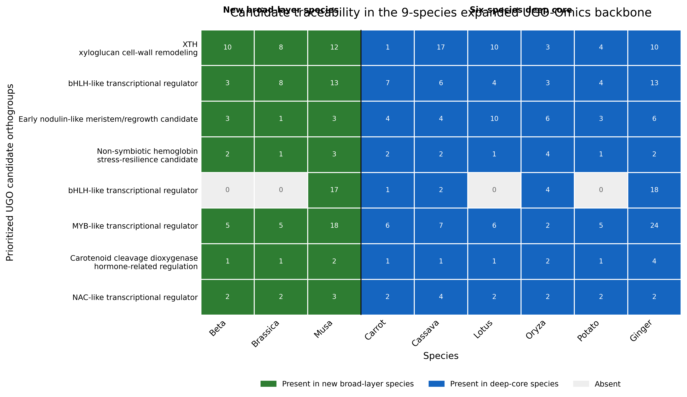
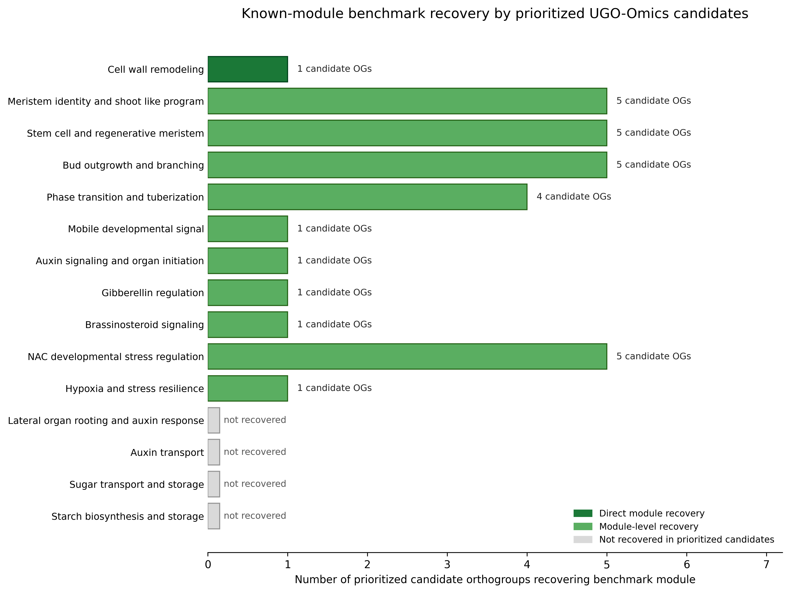

UGO-Omics overview
UGO-Omics combines a six-species expression-backed analytical core, a 51-species broad underground-organ resource layer, a 9-species expanded orthogroup backbone, candidate expansion traceability, known-module benchmark recovery, and a browsable static website.
51
species in broad underground-organ resource layer
9
species in expanded OrthoFinder backbone
8/8
prioritized candidates remapped to expanded backbone
11/15
curated benchmark modules recovered by prioritized candidates
Candidate and benchmark layers should be interpreted as prioritized, traceable, and module-level recovery evidence, not as functional validation of individual genes.
Species Browser
Candidate Expansion
Figure 4. Candidate traceability in the 9-species expanded backbone

Benchmark Recovery
Figure 5. Known-module benchmark recovery

Candidate Browser
Loading candidate data...
Top Orthogroups
Loading orthogroup data...
Downloads
Loading downloads manifest...